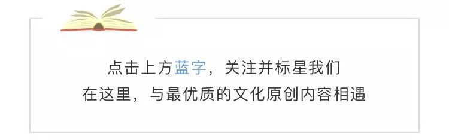
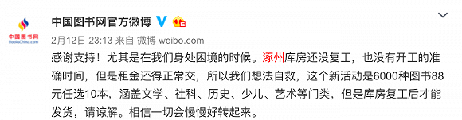

疫情之下，除了求救和倒闭，实体书店还有别的出路吗？
原文链接 备份链接 过去，网红店过网红店的，卖咖啡的卖咖啡，纯靠卖书的踏踏实实解决温饱，但如今，它们都“歇菜”了。 记者 | 张峰 实习生 | 陈淦博、余晓璐 编辑 | 沈小山 终于开店了。 过去的一个月，对于那些个体经营的实体书店来 …

“疫情迟迟没有尽头，书店撑不住了。”2月24日，单向空间发布了一封续命救助信，称受新冠疫情影响，书店2月份收入较往年下滑80%，希望发起50元至8000元不等的众筹助力计划。这一举措引发了“做书”公号的批评，一篇题为《只靠情怀充值能拯救单向空间吗？》的文章指责单向空间这样网红体质的书店这个时候出来呼救，反而透支了文青的钱包，让更多开在城市社区的独立书店、二三四线城市中的“沙漠绿洲”得不到关注。
之所以“透支文青钱包”的隐忧存在，是因为在一个多月漫长的疫情状态之下，无论是大城市里的网红书店还是二三四线城市的小书店，都已经没有顾客、销售停滞，纷纷采取多种措施试图自救。实际上，不仅是书店，整个图书行业各个环节都受到了疫情波及，其中实体书店受到的影响最为严重和明显。
界面文化（ID：Booksandfun）在采访中发现，第一，线上书店遇到的最大困难是大多数仓库未复工，无法发货，中国图书网推出“88元任选10本”活动以解决现金流问题；第二，大型电商如当当虽称图书销售未受影响，但也因有员工确诊新冠肺炎而使消费者感到恐慌；第三，实体书店面临双重考验，一方面老问题依旧存在——电商已经把实体书店“打”得体无完肤，国家和资本补助并未能帮助书店增强自身的造血功能，另一方面新的契机正在出现，越来越多书店在疫情中开始实验线上活动、线上直播、线上众筹等等生存出路。

中国图书网推出“88元任选10本”活动
针对实体书店目前的困境，政府出台了一些相关措施。例如2月26日北京市委宣传部就2020年北京市实体书店扶持工作发出通知，协调出版单位在图书供货、回款账期、营销活动等方面为实体书店提供更多便利和支持，倡议回款账期延长3-6个月；协调电商平台对书店免收或降低入驻费用，并给予特殊费率优惠和流量补贴等。政策救援与勉力自救并行，图书行业能够撑过寒冬吗？
1
出版社：
免费或低价开放资源的“双刃剑”
2月5日，武汉方舱医院青年捧读福山《政治秩序的起源》的照片在社交网络上广为流传，“理想国”受此激励推出了一个线上活动，“看理想”和“理想国”陆续开放了1300多集节目和20多本电子书的收听和阅读权限。读者可以在看理想APP免费收听节目，也可以在理想国图书旗舰店以每本1元钱的价格领取20多本电子书。与这一做法类似，商务印书馆人文社科知识服务平台的上千余种电子图书资源也向社会免费开放，其下属的《英语世界》杂志限期免费开放所有杂志电子版内容。花城出版社则在“爱花城”APP上以免费阅读的形式推出了共19年的《花城》杂志电子版。

武汉方舱医院，青年捧读福山《政治秩序的起源》
南方出版传媒股份有限公司总编辑兼花城出版社社长肖延兵告诉界面文化，推出这些免费举措，一方面是希望发挥文学抚慰伤痛、鼓舞人心的作用，体现应有的责任担当，另一方面也让花城吸引了更多读者。免费开放阅读资源以后，“爱花城”平台上的文学作品阅读量大幅度提升，花城出版社的音乐电子教材每天都有数十万的下载次数。从客观上来看，此次疫情更加明确了“出版融合”的发展趋势，也更坚定了花城出版社做数字出版的决心。
但出版社开放免费或低价资源也是一把“双刃剑”。山东友谊出版社社长兼总编辑何慧颖在接受百道网访谈时分析认为，出版社的免费共享可以起到很好的广告宣传作用，为今后纸质书的热销奠定基础。不过，对一部分图书来讲，也可能由于过度透支图书内容而影响到纸质书的销售，“非常时期的无条件免费线上共享，充分体现了国有文化企业的责任担当，但长期这样免费共享下去，恐怕也不是大部分出版社能够吃得消的。”
而在纸质书的出版和定价方面，出版社普遍仍处于掣肘状态。肖延兵在接受百道网采访时提到，花城出版社的图书出版和生产销售都受到了疫情的影响。在出版方面，由于多数印刷企业采用淡旺季用工调剂方式，疫情可能会影响他们的日常用工，印刷排期受到波及，纸张和印刷成本也可能增加不少。在销售环节，九成以上的地面实体书店处于停业状态，网上销售也因物流不畅受到了很大打击，纸质书籍的销售在线上线下同时受阻。商务印书馆总经理于殿利则指出了书籍定价的特殊性以及在日前特殊状态下出版社的两难。他认为，其他类别商品可以在上架前根据成本状况灵活调整价格，而图书已经在先前的生产流程中确定价格并做出明确标识，虽成本增加，价格却无法随之调整，临时改价会引发读者质疑。
2
电商平台：
库房压力与物流障碍
“我想问，我刚在当当买的书，要不要退货？”
“我刚刚买完，退货去退货去。”
这是当当网员工确诊新冠肺炎的新闻爆出后社交媒体上出现的反应。虽然当当客服试图耐心解释图书出库的无接触以及消毒过程，但依然有消费者表示不敢在当当买书了。
与积极组织线上活动的出版社不同，电商本来应当在疫情当中占据优势。实际上，2003年的非典疫情催生了中国零售业的变革。刘强东曾提到中关村电脑卖场在非典疫情时集体关门，他由此开始严肃考虑做电商，最终走上了全面线上化的道路。非典一爆发，马云也觉察到，网上购物将成为消费者刚需，阿里巴巴有必要在当时已有的2B（面向企业客户）业务基础之上推出2C（面向普通消费者）网购平台。2003年5月10日，淘宝上线，很快即打败了在中国如日中天的美国互联网巨头eBay。按常理来说，疫情似乎本应刺激网上购物的发展，但这一次，中国的一些线上书店也难逃寒冬。
当当工作人员称，目前推出100-50活动不是因为疫情期间书卖不出去，而是开学季的常规活动。当当称目前图书“销售一切正常”，但界面文化记者也发现，目前网购图书时效无法保证，比平时的送达速度慢很多，例如2月27日购买的图书预计一周以后才能送达，物流不畅的难题切实存在。
与当当相比，其他线上书店面对的情况要严峻得多。如果你打开中国图书网，注意力一定会被网站头条位置“88元10本”的巨幅广告吸引，中图网甚至因这项活动登上微博热搜——6000种图书88元任选10本，涵盖文学、社科、历史、少儿、艺术等门类，但是库房复工后才能发货。中图网官微曾在2月12日的微博中提及库房面对的巨大压力——“涿州库房还没复工，也没有开工的准确时间，但是租金还得正常交，所以我们想法自救。”中图网总经理黄平在接受“北青艺评”采访时提到，“没这笔钱，我们的现金流会出问题，”这次成功的促销活动帮助中图网在春节前在支付完了员工工资和年终奖，并可以为节后经营预留一部分现金。

中图网微博
线上书店遇到的最大困难是大多数仓库未复工、无法发货，以及物流不畅问题。在“北青艺评”的报道中，一位不具名的出版人士提到“在此次疫情中，越是大型网络书店，遇到的困难就越大“，“我们的一家重要客户，在全国网上销售，此外有十几家实体书店，可库房在湖北，因为从湖北发货到全国各地，价格比较便宜，这次全部沦陷。他说还能继续运营，但库房关闭了，实在发不出货。我看他说着说着，都快哭了。”
3
实体书店：
**存活不易，百般自救
**
“从整个图书行业看，出版社损失较小，线上书店损失较大，实体书店损失最大。”黄平认为。中小书店联盟“书萌”主持了一项2020年春节实体书店紧急调查，调查报告反映了中小型民营书店在当下疫情当中的情况，在全国353份有效问卷当中，86.97%的书店目前几乎没有收入来源，如果疫情继续，34.56%的书店只能维持一个月不到，甚至有的书店已经在进行结业的操作，另外有四成的书店称撑不到三个月。

中小书店联盟“书萌”调查数据
广东潮州的三更书店就是结业书店之一。2017年10月，合伙人之一姚超凡在实体书店回暖的大环境下回到潮州开店，两年间尝试了书店与餐饮相结合的方式，勉强能够维持运营。他原以为今年将是书店复苏的一次生机，如今却不得不在公号里写下“三更失约”的告别信：“浮生着甚苦奔忙，盛席华筵终散场。”
一些出版社的线上免费共享计划以及联合当当推出的五折封顶大促计划，南昌青苑书店创始人万国英都看到了，感到有些“心里堵得慌”。她一来担心“大家看到免费的东西太多了，就会觉得没有必要再去花钱了”，二来也隐隐预感，为了消化库存，整个书店行业的混战又会开始。她理解这个时候每个企业都想要自保，获得现金流才能维护正常开支，不过从结果上看，整个市场可能会陷入折扣战红海。“读者肯定哪里便宜哪里走，但实体书店会受到不小的影响，”万国英对界面文化说。
创立28年来，1月31日，青苑书店第一次在公众号发出求助的声音。《我是青苑书店，请不要让我冻毙于风雪》一文发出后，200名读者在青苑书店充值了近10万元。单向空间也在2月24日发起了众筹续命，其公号文章称，目前4家实体书店只有北京朝阳大悦城店开业，书店平均每天只能卖出15本书，其中一半还是同事自己买走的。尽管已经尝试了线上平台储值优惠、在线直播、建群秒杀等一系列活动，但每次推广只能带来几百元的收入。其电商平台因供应商未开工、物流受限等原因，销售情况也几乎腰斩。
青苑书店在微信公号发出求助信
上海钟书总经理特别助理兼钟书阁副总黄翊苹告诉界面文化，钟书阁实体书店在疫情当中也受到了很大冲击，“2019年总共13家门店做销售，光是春节半个月就销售了500多万。今年春节期间只有3家店在营业，销售额不到10万。”目前静安店已经开店，但只开放部分区域，每天客流量最多只有三四十位。
此外，钟书阁也开始尝试直播带货。第一场直播有8000多人次观看，《张文宏教授支招防控新型冠状病毒》的新书直播在1小时内卖书150多本。除了天猫和当当店，各个门店的客户群也会接受读者订书。纵有丰富的自救举措，目前实体书店部分依旧亏损，但黄翊苹认为，钟书阁目前并没有“疫情再持续下去公司就会倒闭”的严重问题。因为钟书阁总公司上海钟书有自己的出版业务，并且以课外阅读类的学生读物为主，客人也主要是学生。这段时间小朋友虽然在家里，也依然需要买书，网店图书的销量相对较高。
钟书阁直播
但是非刚需线下零售实体要艰难得多。广州市扶光书店（时光里店）称，扶光书店品牌旗下书店都面临着客流锐减、库存积压、书店收入甚微且单一的现状，同时仍要支付每月供应商货款和租金（有部分店铺获得业主降租支持），以及不降薪、不裁员的全体人工薪酬，与此同时，书店对疫情期间消费者心理变化和消费习惯改变以及对未来纸质书阅读弱需求的担忧也逐渐增长。扶光书店说，希望出版供应商能短期调整货款账期及放宽退货比例，并予以优惠措施。
3
尾声：书店的未来
“这段时间大家都躲在家里没有办法出门，我相信疫情真的结束之后，书店也会有一波反弹，因为毕竟大家闷久了，喜欢看书的人就是喜欢看书，有的人的休闲活动可能是吃饭、去玩，可能有些人就是想去书店走一下，我想会有很多客人愿意回来的。”黄翊苹对疫情结束后的实体书店整体持乐观态度。她说，图书虽然不能说是刚需，但是很多人已经把去书店看书看作是生活当中的一种精神寄托了。
万国英则认为，此次疫情的影响还有1到2个月，书店恢复还需要3个月，要半年时间才能够看到整个行业的变化。在整个图书行业，只有像教辅这样的刚需或者特别热门的书才会成为消费重心。“人们满足了基本需求以后才会想要精神层面的需求。在这半年里，实体书店该倒的就会倒掉，能够生存下来的实体书店也很危险。减免房租、补贴社保等措施可能可以解决两三个月的问题，但‘救急不能救贫’。”
实体书店的劣势地位非一日之寒，此次疫情只不过直接撕开了书店行业的旧伤。万国英在接受界面文化采访时提到，在疫情之前，电商已经把实体书店打得体无完肤了。“折扣战从2018年打到现在。去年更加恶劣，基本每个月电商都有活动，2019年实体书店的数据已经很难看了。”而在实体书店行业当中，国家补助、资本补助都已经扭曲了行业的生存常态，导致书店行业商业模式暧昧不明。这也正是公众号“做书”的文章对单向空间提出的批评之一：当家产品是单向历，撬动文化界的是单读杂志、单向街书店文学奖，这样一来，还不如干脆脱去“沉重肉身”。
2月18日青苑书店 图片源自@青苑书店微博
“一家书店在宫殿般的场所里能够自负盈亏吗？不算投资的话，这样的标配也让服务成本增加。书的盈利、咖啡、文创都不能转化为书店的造血功能，但如果完全靠补贴来做，就不能够真正叫做商业行为。”万国英认为，政府的政策和资金支持是有利于书店发展的。但是书店行业应该有一个思考，因为现在很多人把书作为附属和装饰，让书店成为打卡、拍照、游览的地方。“北大不是因为招收的学生很多，而是因为培养出了很多人才，才是好学校。书店也是这样，能够给市民带来什么引导，培养多少读书种子，才是书店真正存在的意义。”
如果说万国英担心的是实体书店既存的老问题，书萌创始人孙谦则看到了一种新出路。在接受《中国新闻出版广电报》采访时，孙谦称，经历这次疫情，此前在书店业流行的“书店+”“图书+”理念受到了巨大挑战。实体书店如何将互联网思维贯穿于运营全程，在线上线下进行符合实体书店实际的融合，将成为广大实体书店最为关切并且实践的方向。之后孙谦还发表了一篇文章《实体书店如何盈利——未来篇》，称未来实体书店的盈利主要依靠三个部分：升级产品线，从原来的只卖图书、文创、咖啡这些有形产品拓展到课程、知识、服务等无形产品上；要进行升级服务，从原来的只提供现有产品的批发零售服务到提供社交和情感的服务；空间上要进行线下到线上的升级，积累对自己有信任感的客户，形成自己的“私域流量”。“实体书店未来的战场，将不再只是线下。未来，产品、服务、空间的全面转线上，是大家的新课题。”
青苑书店也进行了线上活动，在“书店燃灯计划”当中，书店卖出了不到十本书，从销售的角度上说收益不是很大。但是万国英看到，做线上活动本身是有意义的，能够在疫情期让在家宅了一个月的书友得到一些新的思考。她说，未来也许会带来线上线下的新组合。2月20日，青苑书店开门营业，第一天客人不到二十人，第二天下雨，客人更少了。不过万国英依然抱有希望，熟客告诉她，希望疫情早日结束，再和读者们聚到一起。
本文为独家原创内容，采写：潘文捷，编辑：黄月，未经界面文化（ID：Booksandfun）授权不得转载。

未经授权谢绝转载
欢迎转发至朋友圈
原文链接 备份链接 过去，网红店过网红店的，卖咖啡的卖咖啡，纯靠卖书的踏踏实实解决温饱，但如今，它们都“歇菜”了。 记者 | 张峰 实习生 | 陈淦博、余晓璐 编辑 | 沈小山 终于开店了。 过去的一个月，对于那些个体经营的实体书店来 …
原文链接 备份链接 昨天是春节假期后返工第一天，但因为新冠肺炎的影响，注定了是一个不一样的开工日。每日人物询问了10个不同行业已经开工的人，他们正在做的工作，和我们的生活息息相关，记录他们的生活和烦恼，也是记录这次疫情所影响的不同侧面。 …
原文链接 备份链接 “安倍采取了比特朗普政府更温和的态度” 2月8日，在日本东京池袋， “旗袍女孩”在“东京灯 会满月祭”现场为中国募捐 。图 / 新华 暖春下的日本对华援助 本刊记者/李静 *发于2020.3.2总第937期《中国新闻周 …
原文链接 备份链接 文/西湖君 编辑/大风 三台快递打单器在不停地吐出新单据。十几分钟的时间里，来自全国的订单疯狂地涌进后台，地上已经堆满了好几层快递单据。站在打单器旁边的，是浙江衢州市市长汤飞帆。而直播镜头的另一端，是53万拼多多用户。 …
原文链接 备份链接 文 | 谢九 在中国的疫情逐渐缓和之际，中国之外的疫情却突然爆发升级。2月25日以来，中国境外新增的确诊病例已经超过了中国境内，新冠肺炎疫情进入全球化的2.0阶段。 目前，韩国的新增确诊人数已经超过了中国，日本、伊朗、 …